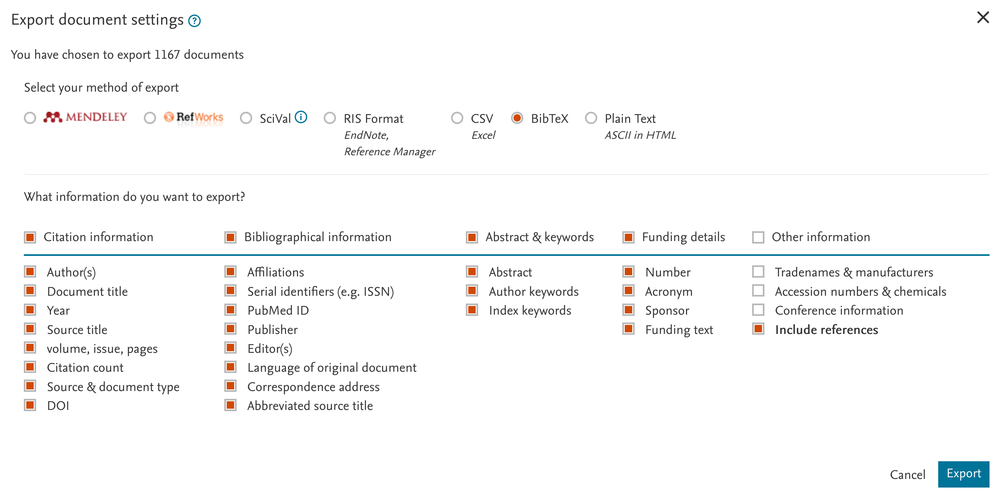
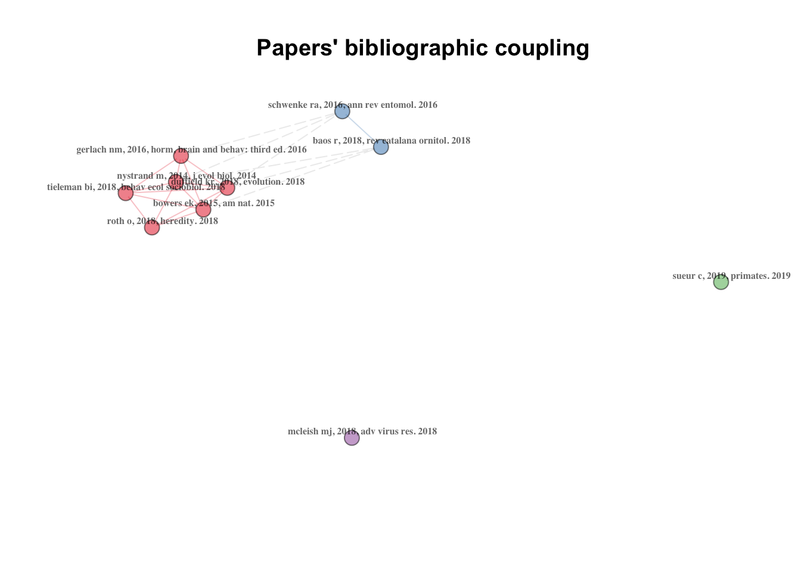
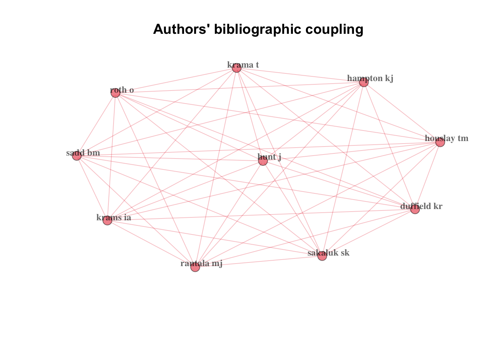
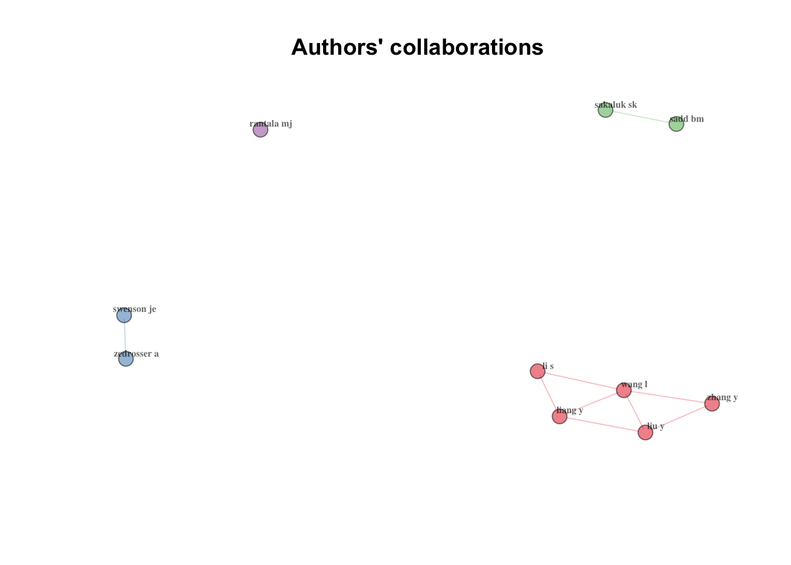
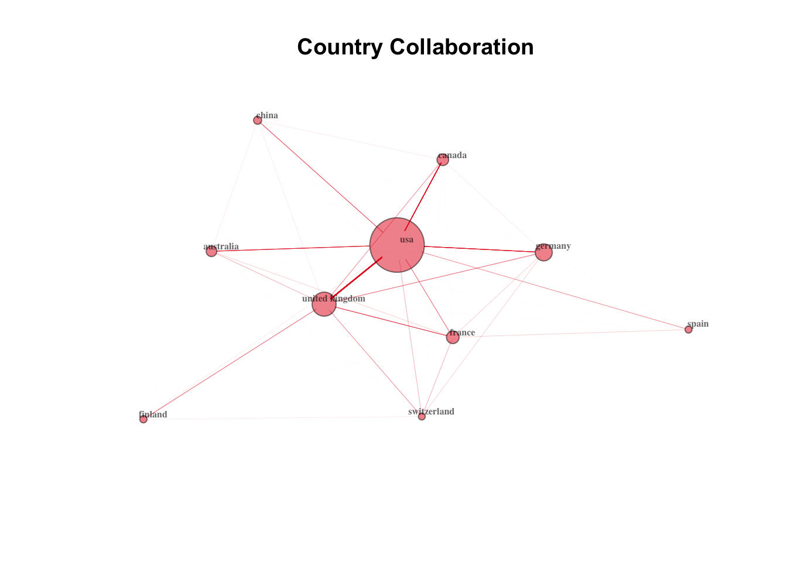
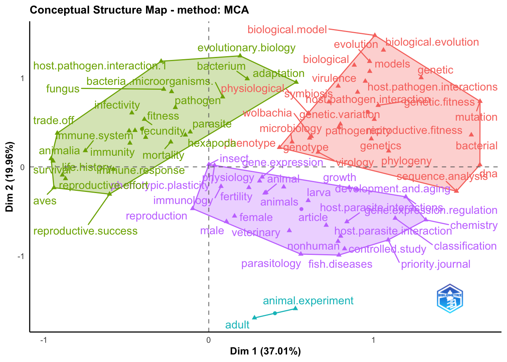
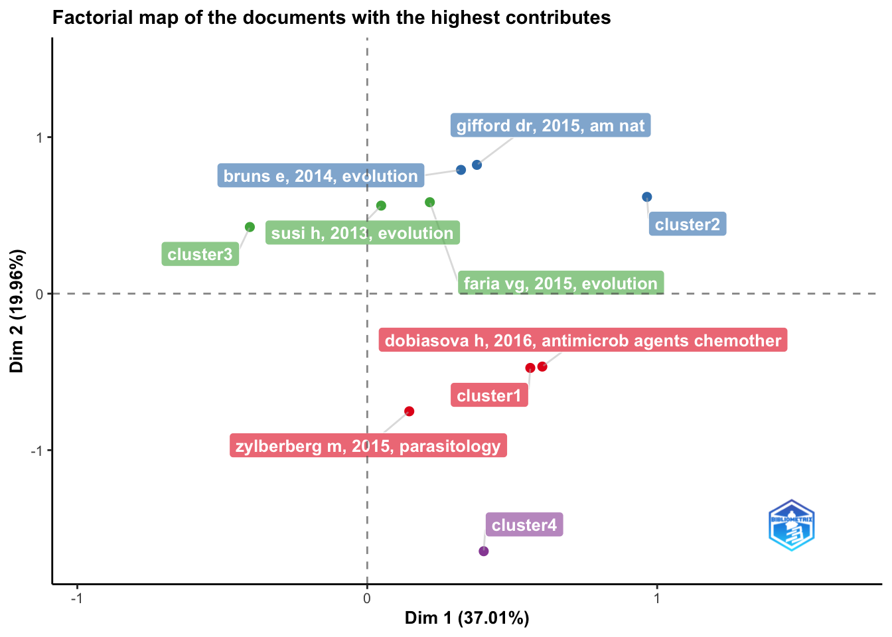
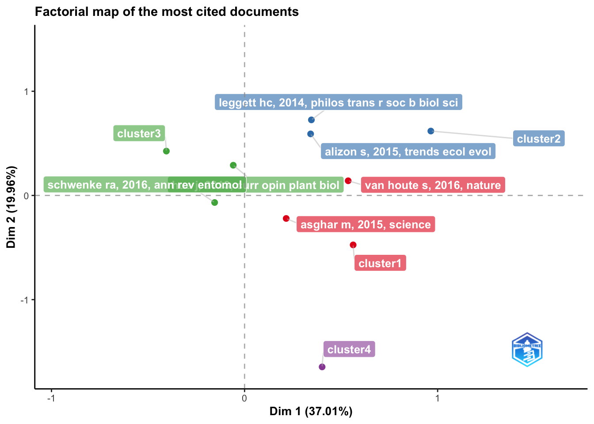
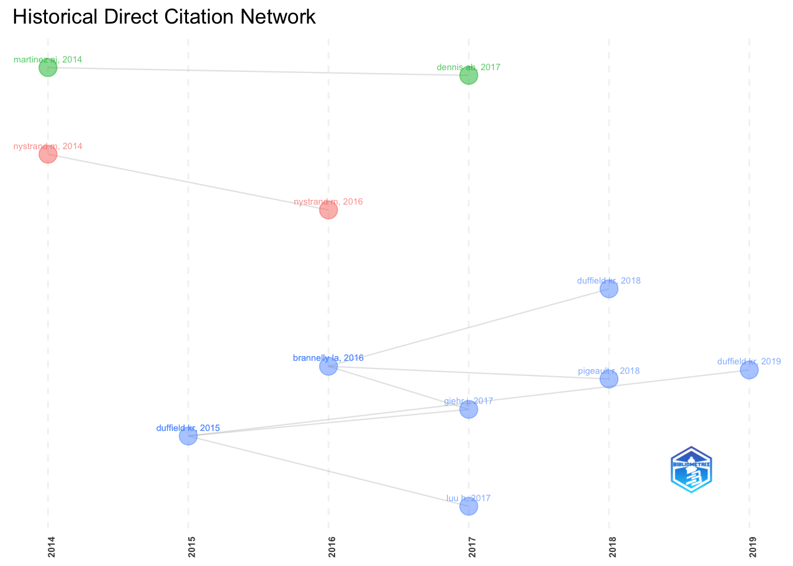

Code
install.packages("bibliometrix", dependencies=TRUE) ### installs bibliometrix package and dependencies
library(bibliometrix) #uploads the package
# Note: output not displayed for this chunkBefore the lesson:
Please make sure you got the latest RStudio and latest R version installed.
Lesson objectives:
* Learn to perform a search in academic literature database
* Download search results and import them into R
* Summarise bibliometric data
* Make a few types of simple bibliometric networks
* Plot bibliometric networks
Lesson outline:
* About this lesson
* Getting bibliometric data
* Summarising bibliometric data
* Creating bibliometric networks
* More resources
This lesson is prepared for these who are already familiar with R coding language, R markdown and RStudio. By the end of this tutorial you should be able to create a simple html document containing markdown-formatted text, images and R code - all in RStudio.
You can do analyses of literature on any topic.
In this lesson we will have a look at the academic literature related to the concept of Terminal Investment.
Terminal Investment hypothesis predicts increased investment of resources into reproduction as the chances of survival decrease. This can be observed as increased reproductive effort in older animals or in animals challenged with factors signalling threat to their survival (e.g., predation, pathogenes, parasites).
Terminal investment in animals is usually studied in three main ways:
1. via observational studies of correlations of age and reproductive effort,
2. in experimental studies where animals are subject to immune challenges and their subsequent reproductive effort is compared to unchallenged animals of the same age,
3. in experimental studies where reproductive response to immune challenge is compared between animals of older ages versus younger ages.
You can read more on this Wiki page: https://en.wikipedia.org/wiki/Terminal_investment_hypothesis. We now actually completed a meta-analysis on this topic and published our findings - you can find our published paper at https://www.ncbi.nlm.nih.gov/pmc/articles/PMC10176797/).
We hope the topic is quite appealing and quiet easy to understand.There are several published reviews on terminal investment hypothesis and we can expect many publications related to this topic, as well as many researchers working on it. Is this so?
Today, we will try to run bibliometric analyses on the relevant sample of literature. Note that there are a few available R packages (and many other online/software tools, and new are being developed) that can perform some of the tasks which we will practice during this exercise, and often they can do much more.
For your own project you may want to try to use some other tools, but there is no single “perfect” tool that fits all possible analyses and that is easy and usable for all disciplines and types of research questions. Also note that the main purpose of this exercise is to familiarize you with the basic principles/issues of bibliometric analyses. You can always learn more in your own time if you are interested.
The search
First, we need to find a representative sample of academic publications on our topic of choice. For this, we will use cross-disciplinary database of academic literature, Scopus (https://www.scopus.com; owned by Elsevier). This database has the largest coverage of the published literature and should give us the most complete picture. An alternative database, commonly used for broad academic literature searches and analyses, is Web of Science: https://www.webofknowledge.com/ (WoS; it has slightly different way of formatting search strings).
You should have free access to Scopus and WoS database on campus, but you may not be able to access it from outside the campus unless you use UNSW VPN or other university proxy servers (try logging in via the UNSW Library page, https://www.library.unsw.edu.au, then search for a link to Scopus database).
Free-access broad-coverage databases include BASE (Bielfield Academic Search Engine, https://www.base-search.net/) and Lens (https://www.lens.org). Google Scholar (https://scholar.google.com/) is not recommended for this type of work, mainly because it is hard to export bibliometric records from the results list.
Go to Scopus search page: https://www.scopus.com/search. Careful, there are several different search engines in Scopus: 1. Authors (also a new Researcher discovery) - information about authors (and affiliations).
2. Sources - information about journals (and other collections of documents).
3. Documents - information about journal articles (and other documents, such as book chapters) - WE WILL USE THIS ONE! It has two interfaces: Basic and Advanced.
In the Document basic search (a simple single search window), enter the phrase “terminal investment” (without quotation marks) in the basic search window, as follows:

Hey, this does not look good… - many documents were found, and most of them are completely unrelated (e.g. on building shipping terminals).
Why is that?
This is because our search is too simple. It allows us only to find the papers that explicitly mention terminal AND investment words in their title, abstract or keywords (the AND operator is a default one and it gets inserted automatically by the search software). To find a more relevant set of bibliographic records for our analyses, we need a more sophisticated search string.
Additionally, we will narrow down our topic a little bit more and aim to find papers that use immune challenge approach in wild or semi-wild animal species (so, we try to exclude established lab model species such as mice and rats, domesticated animals such as dogs and pigs, and humans). Finding the best search string is a bit of an art, so we just provide you with this one to save time (make sure to copy the whole thing - you may need to scroll to the right to see the complete string):
TITLE-ABS-KEY ( ( "terminal investment" OR "reproductive effort" OR "fecundity compensation" OR "reproductive compensation" OR "reproductive fitness" OR "reproductive investment" OR "reproductive success" OR "Life History Trade-Off*" OR "Phenotypic Plasticity" ) AND ( "immune challeng*" OR "immunochalleng*" OR "infect*" OR lipopolysaccharide OR lps OR phytohemagglutinin OR pha OR "sheep red blood cells" OR srbc OR implant OR vaccin* ) ) AND NOT TITLE-ABS-KEY ( load OR human OR people OR men OR women OR infant* OR rat OR rats OR mouse OR mice OR pig* OR pork OR beef OR cattle OR sheep OR lamb* OR chicken* OR calf* OR *horse* ) You need to copy and paste the above search string into the Advanced Search tab of the Scopus search page:

Press “Search”” button. You should see results roughly like this:

There should be over 1,400 records retrieved from the Scopus database. Some look relevant and many are not, but that is always the case, for a systematic review or a meta-analysis we would manually screen all and exclude irrelevant papers).
On the left side of the results window you can see simple filters: year, most common author names, subject areas, etc. You can explore the whole set roughly by using “Analyze search results” link above the table of the hits:

There are more graphs below, and you can expand and customise them a bit too - have a look!
Next, we can export the bibliographic records for more detailed bibliometric analyses in R. To do so, close the Scopus analyses window and go back to the list of the records found. First, select all records by clicking box “All” in the left top of the list of references. Then click the “Export” link to the right.
A pop-up window with the export options will appear.
First, select the format of the export: we will uses .bib file (BibTex format of references, one of the standard ones).
Second, select which fields have to be exported by clicking the boxes on top of each column (or as needed).
For bibliometric analyses on the citations among papers, it is essential to tick the box next to “Include references” (i.e. data on the cited documents).
Note that, unfortunately, Scopus limits number of exported records to 2,000. For longer lists of records, you will need to split them in smaller chunks for the export and then merge into a single larger data set (not covered in this tutorial; WoS export limits are 1,000 records).

Click “Export” button. A file named “Scopus” (with extension matching your export type file, e.g., bib) will be saved to your downloads folder.
Note that when you export references with their reference lists included in the records, the resulting files are quite large (in our case around 16Mb).
For this exercise, you can reduce your data set by applying some additional filters - e.g. including only literature from the last 5 years.
In case you did not succeed exporting the files (or wish to work with exactly the same ones we used, or you cannot access Scopus), the files downloaded on 27/05/2019 are provided (note that a standard way is to store them inside a “/data” sub-directory).
Create a new Rmarkdown file to save your code (you can do this within new RStudio project). Install and upload bibliometrix R package:
install.packages("bibliometrix", dependencies=TRUE) ### installs bibliometrix package and dependencies
library(bibliometrix) #uploads the package
# Note: output not displayed for this chunkUpload the file exported from Scopus (you can use the one provided) into RStudio (note that the file path you may need to use on your computer may be different, e.g., “H:/Users/z1234567/Downloads/scopus.bib”).
Then, convert the data from that file into internal bibliometrix format.
bib <- convert2df("data/scopus.bib", dbsource = "scopus", format = "bibtex") # Convert to a bibliometric data frame
#>
#> Converting your scopus collection into a bibliographic dataframe
#>
#> Done!
#>
#>
#> Generating affiliation field tag AU_UN from C1: Done!
names(bib)
#> [1] "AU" "DE" "ID" "C1" "CR"
#> [6] "JI" "AB" "AR" "coden" "RP"
#> [11] "DT" "DI" "BE" "FU" "BN"
#> [16] "SN" "SO" "LA" "TC" "PN"
#> [21] "page_count" "PP" "PU" "PM" "DB"
#> [26] "TI" "url" "VL" "PY" "FX"
#> [31] "J9" "AU_UN" "AU1_UN" "AU_UN_NR" "SR_FULL"
#> [36] "SR"
#write.csv(bib, "data/bib_as_df.csv", row.names = FALSE) #if you want to save this data frame as a csv fileAfter some processing, an object called “bib” is created. It contains a data frame with each row corresponding to one exported publication from Scopus and with each column corresponding to a field exported from Scopus online database. If you tried to achieve this by exporting a csv file directly from Scopus, you would sometimes get a messy data frame, due to missing field values shifting the cells between columns.
What are the contents of the columns of our “bib” data frame? Columns are labelled with a two-letter tags: AU, DE, ID, C1, CR, JI, AB, AR, coden, RP, DT, DI, BE, FU, BN, SN, SO, LA, TC, PN, page_count, PP, PU, PM, DB, TI, url, VL, PY, FX, J9, AU_UN, AU1_UN, AU_UN_NR, SR_FULL, SR.
For a complete list and descriptions of field tags used in bibliometrix you can have a look at this file: http://www.bibliometrix.org/documents/Field_Tags_bibliometrix.pdf.
Our data frame contains just a subset of these codes. Which ones?
Note that column bib$AU contains authors of each paper (as surnames and initials) separated by semicolon (;). We can easily split these strings and extract a list of all author names to a vector:
# head(bib$AU) #have a look at the few few records on your screen
authors <- bib$AU
authors <- unlist(strsplit(authors, ";")) #split the records into individual authors
authors <- authors[order(authors)] #order alphabetically
head(authors) #have a look again
#> [1] "ABBOTT J" "ABE A" "ABEDON ST" "ABO-SHEHADA M"
#> [5] "ABOUL-SOUD MAM" "ABRANTES N"
# View(unique(authors)) #use to see all the values
# write.csv(authors, "data/author_list_uncleaned.csv", row.names = FALSE) #if you want to save this data frame as a csv fileCited references for each included paper are in the CR column of the “bib” data frame. They are in a single string, also separated by semicolon (;). We can have a look at them and check whether familiar names were cited, e.g.:
dim(bib) #dimensions of the data frame
#> [1] 1167 36
names(bib) #names of the columns of the data frame
#> [1] "AU" "DE" "ID" "C1" "CR"
#> [6] "JI" "AB" "AR" "coden" "RP"
#> [11] "DT" "DI" "BE" "FU" "BN"
#> [16] "SN" "SO" "LA" "TC" "PN"
#> [21] "page_count" "PP" "PU" "PM" "DB"
#> [26] "TI" "url" "VL" "PY" "FX"
#> [31] "J9" "AU_UN" "AU1_UN" "AU_UN_NR" "SR_FULL"
#> [36] "SR"
#bib$CR[1] #display a list of cited references for the first paper in the data frame
#(we are not displaying it in this document as it is a very long string! - examine it on your screen instead)
#look whether some of these names are cited:
grep("NAKAGAWA, S.", bib$CR)
#> [1] 2 6 7 20 33 36 37 56 72 75 102 109 121 145 152 166 207 222 249
#> [20] 285 293 312 330 361 362 368 370 401 440 455 471 475 489 501 512 560 562 573
#> [39] 590 620 655 690 713 730 770
grep("CORNWELL, W.", bib$CR)
#> [1] 15
bib[grep("CORNWELL, W.", bib$CR), c(1:3)] #who is citing?
#> AU
#> MULETZ-WOLZ CR, 2019, J EVOL BIOL MULETZ-WOLZ CR;BARNETT SE;DIRENZO GV;ZAMUDIO KR;TOLEDO LF;JAMES TY;LIPS KR
#> DE
#> MULETZ-WOLZ CR, 2019, J EVOL BIOL AMPHIBIANS; BATRACHOCHYTRIUM DENDROBATIDIS; CHYTRID; CLIMATE; DISEASE ECOLOGY; PATHOGEN; PHENOTYPIC PLASTICITY; PHYLOGENETIC CONSERVATISM
#> ID
#> MULETZ-WOLZ CR, 2019, J EVOL BIOL AMPHIBIA; BATRACHOCHYTRIUM DENDROBATIDIS; FUNGILuckily, bibliometrix package has a handy function that summarises the information contained in the “bib” data frame, so we can get some quick facts about our set of papers.
Note: this and the following tasks require quite a bit of computational power, they may be slow or even halt on your computer.
In such case, for this exercise, make your data frame smaller by sub-setting it, e.g.:
“bib <- bib[1:500, ] #taking first 500 records”. However, the results and plots you will produce with a subsetted data frame will differ from the ones presented in this document.
# Preliminary descriptive analyses
results <- biblioAnalysis(bib, sep = ";")
#summary(object = results, k = 10, pause = TRUE) #display a series of summary tables
# Reduce the data set to the subset first 500 records
bib <- bib[1:500, ] #taking first 500 records
#summary(object = results, k = 10, pause = TRUE) #display a series of summary tablesUsing summary function on bibliometrix results, you get several screens with various tables summarising bibliometric data from our data frame - how many documents, journals, keywords, authors, publications time-span, collaboration index, annual publication growth rate, most prolific authors, publications per country, per journal, per keywords, etc.
You can automatically plot some of these tables (hit “return”” to display next graph, and later you can use arrows in the top left of the plots pane to move back and forth between consecutive plots saved in the RStudio memory):
plot(results, k = 10, pause=TRUE) #this takes top 10 values from each plottable table
#> Hit <Return> to see next plot:#> Hit <Return> to see next plot:#> Hit <Return> to see next plot:#> Hit <Return> to see next plot:#> Hit <Return> to see next plot:
#the code below is for saving these plots into a pdf:
# pdf(file = "plots/bib_descriptive_plots.pdf", height = 8, width = 8, pointsize=10) #
# plot(results, k = 20, pause=FALSE) #this takes top 20 values from each plottable table
# dev.off()The cited papers from the CR field of the data frame can be analysed using function citations.
Function citations makes it easy to generate the frequency tables of the most cited papers or the most cited first authors.
Ten most cited papers:
mostcitedP <- citations(bib, field = "article", sep = ";")
cbind(mostcitedP$Cited[1:10]) #first 10
#> [,1]
#> LOCHMILLER, R.L., DEERENBERG, C., TRADE-OFFS IN EVOLUTIONARY IMMUNOLOGY: JUST WHAT IS THE COST OF IMMUNITY? (2000) OIKOS, 88, PP. 87-98 21
#> MORET, Y., SCHMID-HEMPEL, P., SURVIVAL FOR IMMUNITY: THE PRICE OF IMMUNE SYSTEM ACTIVATION FOR BUMBLEBEE WORKERS (2000) SCIENCE, 290, PP. 1166-1168 10
#> ANDERSON, R.M., MAY, R.M., COEVOLUTION OF HOSTS AND PARASITES (1982) PARASITOLOGY, 85, PP. 411-426 9
#> ROLFF, J., SIVA-JOTHY, M.T., INVERTEBRATE ECOLOGICAL IMMUNOLOGY (2003) SCIENCE, 301, PP. 472-475 8
#> CLUTTON-BROCK, T.H., REPRODUCTIVE EFFORT AND TERMINAL INVESTMENT IN ITEROPAROUS ANIMALS (1984) AM. NAT., 123, PP. 212-229 7
#> MINCHELLA, D.J., LOVERDE, P.T., A COST OF INCREASED EARLY REPRODUCTIVE EFFORT IN THE SNAIL BIOMPHALARIA GLABRATA (1981) AM. NAT., 118, PP. 876-881 7
#> SHELDON, B.C., VERHULST, S., ECOLOGICAL IMMUNOLOGY: COSTLY PARASITE DEFENCES AND TRADE-OFFS IN EVOLUTIONARY ECOLOGY (1996) TRENDS IN ECOLOGY & EVOLUTION, 11, PP. 317-321 7
#> AHMED, A.M., BAGGOTT, S.L., MAINGON, R., HURD, H., THE COSTS OF MOUNTING AN IMMUNE RESPONSE ARE REFLECTED IN THE REPRODUCTIVE FITNESS OF THE MOSQUITO ANOPHELES GAMBIAE (2002) OIKOS, 97, PP. 371-377 6
#> FORBES, M.R.L., PARASITISM AND HOST REPRODUCTIVE EFFORT (1993) OIKOS, 67, PP. 444-450 6
#> HAMILTON, W.D., ZUK, M., HERITABLE TRUE FITNESS AND BRIGHT BIRDS: A ROLE FOR PARASITES? (1982) SCIENCE, 218, PP. 384-387 6Ten most cited authors:
mostcitedA <- citations(bib, field = "author", sep = ";")
cbind(mostcitedA$Cited[1:10]) #first 10
#> [,1]
#> POULIN R 181
#> SCHMID HEMPEL P 181
#> HASSELQUIST D 160
#> WINGFIELD J C 147
#> SHELDON B C 117
#> HOFFMANN A A 116
#> MØLLER A P 114
#> READ A F 113
#> RANTALA M J 106
#> BENSCH S 104Function localCitations generates the frequency table of the locally most cited authors. Locally means that citations are counted only within the given data set - i.e. how many times an author/paper that is in this data set has been cited by other authors/papers also in the data set.
Ten most frequent local cited authors and papers:
mostcitedLA <- localCitations(bib, sep = ";")
mostcitedLA$Authors[1:10,]
#> Author LocalCitations
#> 1169 LÓPEZ-GÓMEZ M 9
#> 1928 VERDEJO-LUCAS S 9
#> 165 BILLINGS G 8
#> 435 DAVIS BM 8
#> 879 HUBBARD TP 8
#> 1124 LEUNG KY 8
#> 1158 LIU Q 8
#> 1439 PARK JS 8
#> 1961 WALDOR MK 8
#> 1974 WANG Q 8
mostcitedLA$Papers[1:10,]
#> Paper DOI
#> 323 ASGHAR M, 2015, SCIENCE 10.1126/science.1261121
#> 448 LEVENTHAL GE, 2014, AM NAT 10.1086/675242
#> 312 BOWERS EK, 2015, AM NAT 10.1086/681017
#> 254 SCHWENKE RA, 2016, ANN REV ENTOMOL 10.1146/annurev-ento-010715-023924
#> 440 PODMOKŁA E, 2014, J AVIAN BIOL 10.1111/j.1600-048X.2013.00284.x
#> 500 GONZÁLEZ-TOKMAN DM, 2013, FUNCT ECOL 10.1111/1365-2435.12072
#> 320 VÉZILIER J, 2015, BIOL LETT 10.1098/rsbl.2014.0840
#> 192 GIEHR J, 2017, R SOC OPEN SCI 10.1098/rsos.170547
#> 236 BRANNELLY LA, 2016, OPEN BIOL 10.1098/rsob.150251
#> 273 CROSSIN GT, 2016, FUNCT ECOL 10.1111/1365-2435.12482
#> Year LCS GCS
#> 323 2015 9 166
#> 448 2014 8 15
#> 312 2015 6 30
#> 254 2016 5 67
#> 440 2014 5 20
#> 500 2013 5 17
#> 320 2015 4 14
#> 192 2017 3 9
#> 236 2016 3 18
#> 273 2016 3 44So far, we looked only at the numbers - who or what gets cited most, either from the main papers list or from the lists of the references within these papers. Now it is time to look at the actual networks of citations and also other types of networks that can be created using our data set.
To do so, we will be creating various rectangular matrices which reflect connections of different attributes of Documents/Authors. These matrices than can be plotted as bipartite networks and analysed.
Co-citation or coupling networks are a special type of networks build from the information on scientific papers containing references to other scientific papers.
Package bibliometrix contains function biblioNetwork which makes creating bibliographic networks easy. This function can create the most frequently used coupling networks: Authors, Sources, and Countries.
Bibliographic coupling - two articles are bibliographically coupled if they share at least one reference from their reference lists, i.e. at least one cited source appears in the reference lists/bibliographies of both papers (Kessler, 1963).
NetMatrix <- biblioNetwork(bib, analysis = "coupling", network = "references", sep = ";")
net = networkPlot(NetMatrix, weighted = NULL, n = 10, Title = "Papers' bibliographic coupling", type = "fruchterman", size = 5, remove.multiple = TRUE, labelsize = 0.5)
Above, we plotted only the top 10 most coupled papers (n = 10). Try increasing this number to 100 (would not recommend further increasing the number of displayed nodes - it gets slow and messy).
What happens and why?
Author’s bibliographic coupling - two authors are bibliographically coupled if they share at least one reference form their reference lists.
NetMatrix <- biblioNetwork(bib, analysis = "coupling", network = "authors", sep = ";")
net = networkPlot(NetMatrix, weighted = NULL, n = 10, Title = "Authors' bibliographic coupling", type = "fruchterman", size = 5, remove.multiple = TRUE, labelsize = 0.8)
Above, we plotted only the top 10 most coupled authors (n = 10). Try increasing this number to 100 (would not recommend further increasing the number of displayed nodes to >50 - it gets slow and messy).
What happens and why?
Bibliographic co-citation is kind of opposite to bibliographic coupling, in so that two papers are linked by co-citation when both are cited in a third paper.
NetMatrix <- biblioNetwork(bib[1:50,], analysis = "co-citation", network = "references", sep = ";")
net <- networkPlot(NetMatrix, weighted=NULL, n = 10, Title = "Papers' co-citations", type = "fruchterman", size = 5, remove.multiple = TRUE, labelsize = 0.5)Note that for creating this matrix we only used first 50 papers from our data set - this is because the resulting matrix is a matrix of ALL cited papers and it gets HUGE). Also, we plotted only the top 10 most coupled papers (n=10). Try increasing this number to 20 (would not recommend further increasing the number of displayed nodes to >50 - it gets slow and messy).
What happens and why?
Bibliographic collaboration is a network where nodes are authors and links are co-authorships of the papers.
NetMatrix <- biblioNetwork(bib, analysis = "collaboration", network = "authors", sep = ";")
net <- networkPlot(NetMatrix, weighted = NULL, n = 10, Title = "Authors' collaborations", type = "fruchterman", size = 5, remove.multiple = TRUE, labelsize = 0.5)
Above, we plotted only the top 10 most collaborating authors (n = 10). Try increasing this number to 100 (would not recommend further increasing the number of displayed nodes - it gets slow and messy).
What happens and why?
Country Scientific Collaboration - we can visualise authors from which countries publish papers together most frequently.
bib <- metaTagExtraction(bib, Field = "AU_CO", sep = ";") #we need to extract countries from the affiliations first
NetMatrix <- biblioNetwork(bib, analysis = "collaboration", network = "countries", sep = ";")
net <- networkPlot(NetMatrix, n = 10, Title = "Country Collaboration", type = "auto", size = TRUE, remove.multiple = FALSE, labelsize = 0.5)
Above, we plotted only the top 10 most collaborating countries (n = 10). Try increasing this number to 50 (would not recommend further increasing the number of displayed nodes to >100 - it gets slow and messy).
What happens and why?
Keyword co-occurrences - we can also visualise which papers share most keywords (from the Scopus database).
NetMatrix <- biblioNetwork(bib, analysis = "co-occurrences", network = "keywords", sep = ";")
net <- networkPlot(NetMatrix, n = 50, Title = "Keyword co-occurance", type = "fruchterman", size = T, remove.multiple = FALSE, labelsize = 0.7, edgesize = 5)Try replacing network = “keywords” with network = “author_keywords” and see what happens. You can also try to display fewer/more keywords in the plot.
Note: you may want to skip this step on a big data set or a slow computer.
Co-Word Analysis - uses the word co-occurrences in a bibliographic collection to map the conceptual structure of research. It works via a separate function conceptualStructure that creates a conceptual structure map of a scientific field performing Correspondence Analysis (CA), Multiple Correspondence Analysis (MCA) or Metric Multidimensional Scaling (MDS) and Clustering of a bipartite network of terms extracted from keyword, title or abstract fields of the data frame. Note that three different graphs are created as an output.
CS <- conceptualStructure(bib, field = "ID", minDegree = 20, k.max = 5, stemming = FALSE, labelsize = 10)


The code above uses field = “ID”. ID stands for “Keywords Plus associated by ISI or SCOPUS database”, to analyse the “conceptualStructure”. You could try using authors keywords, “DE” field, instead of “ID”.
Is the new map different?
Note: you may want to skip this step on a big data set or a slow computer.
Historical Direct Citation Network - represents a chronological network map of most relevant direct citations in a bibliographic collection, i.e who is citing whom and in what order. histNetwork function calculates a chronological direct citation network matrix which then is plotted using histPlot:
#options(width = 130)
histResults <- histNetwork(bib, min.citations = 10, sep = ";")
#>
#> SCOPUS DB: Searching local citations (LCS) by document titles (TI) and DOIs...
#>
#> Found 59 documents with no empty Local Citations (LCS)
net <- histPlot(histResults, labelsize = 2)
#>
#> Legend
#>
#> Label
#> 1 BRANNELLY LA, 2016, OPEN BIOL
#> 2 DUFFIELD KR, 2015, J EVOL BIOL
#> 3 NYSTRAND M, 2014, PROC R SOC B BIOL SCI
#> 4 MARTINEZ AJ, 2014, BMC EVOL BIOL
#> 5 PIGEAULT R, 2018, INT J PARASITOL
#> 6 DUFFIELD KR, 2018, EVOLUTION
#> 7 GIEHR J, 2017, R SOC OPEN SCI
#> 8 DUFFIELD KR, 2019, J EVOL BIOL
#> 9 LUU H, 2017, J EVOL BIOL
#> 10 NYSTRAND M, 2016, BMC EVOL BIOL
#> 11 DENNIS AB, 2017, EVOLUTION
#> Author_Keywords
#> 1 CHYTRID FUNGUS; OOGENESIS; REPRODUCTION; SPERMATOGENESIS; TERMINAL INVESTMENT; WILDLIFE DISEASE
#> 2 LIFE-HISTORY THEORY; NUPTIAL FOOD GIFT; REPRODUCTIVE EFFORT; SPERMATOPHYLAX; TERMINAL INVESTMENT
#> 3 HEAT-KILLED BACTERIA; IMMUNE ELICITOR; IMMUNE TRANSFER; LIFE HISTORY; MATERNAL EFFECTS; PATERNAL EFFECTS
#> 4 FECUNDITY; IMMUNITY; RESISTANCE; SELECTION; SYMBIONT; TRADE-OFF
#> 5 CO-INFECTION; HAEMOPROTEUS; LEUCOCYTOZOON; LIFE-HISTORY TRAITS; PARUS MAJOR; PLASMODIUM; TRADE-OFFS
#> 6 AGE-DEPENDENT REPRODUCTIVE EFFORT; FECUNDITY COMPENSATION; GRYLLODES SIGILLATUS; RESIDUAL REPRODUCTIVE VALUE; TRADE-OFFS
#> 7 INFECTION; REPRODUCTION; SOCIAL INSECT; TERMINAL INVESTMENT
#> 8 FECUNDITY COMPENSATION; GENOTYPE-BY-ENVIRONMENT INTERACTION; LIFE-HISTORY THEORY; RESIDUAL REPRODUCTIVE VALUE
#> 9 BET-HEDGING; FECUNDITY COMPENSATION; IMMUNE PRIMING; LIFE-HISTORY TRADE-OFFS; PHENOTYPIC PLASTICITY; SOMATIC MAINTENANCE; TERMINAL INVESTMENT
#> 10 ANTICIPATORY EFFECTS; MATERNAL EFFECTS; MATERNAL STRESS; PARENTAL EFFECTS; PHENOTYPIC PLASTICITY; TRANSGENERATIONAL EFFECTS; TRANSGENERATIONAL PLASTICITY
#> 11 ADAPTATION; EXPERIMENTAL EVOLUTION; GENE EXPRESSION; LYSIPHLEBUS FABARUM; PARASITOID; VENOM
#> KeywordsPlus
#> 1 ANIMAL; ANURA; CHYTRIDIOMYCETES; COMMUNICABLE DISEASE; ENDANGERED SPECIES; FEMALE; GAMETOGENESIS; MALE; MICROBIOLOGY; MYCOSIS; ORGAN SIZE; PATHOGENICITY; PHYSIOLOGY; POPULATION DYNAMICS; VETERINARY; ANIMALS; ANURA; CHYTRIDIOMYCOTA; COMMUNICABLE DISEASES; EMERGING; ENDANGERED SPECIES; FEMALE; GAMETOGENESIS; MALE; MYCOSES; ORGAN SIZE; POPULATION DYNAMICS
#> 2 AMINO ACID; BACTERIUM; CRICKET; FITNESS; IMMUNE RESPONSE; LIFE EXPECTANCY; LIFE HISTORY THEORY; MORTALITY; NUPTIAL GIFT; REPRODUCTIVE COST; REPRODUCTIVE EFFORT; SPERMATOPHORE; SURVIVAL; TASTE; TRADE-OFF; GRYLLIDAE; GRYLLODES SIGILLATUS; ANIMAL; GRYLLIDAE; MALE; PHYSIOLOGY; TASTE; ANIMALS; GRYLLIDAE; MALE; TASTE
#> 3 FEMALE BEHAVIOR; FLY; GENE EXPRESSION; GENOTYPE; IMMUNE SYSTEM; LIFE HISTORY; MATERNAL EFFECT; PATERNAL EFFECT; PHENOTYPE; REPRODUCTIVE SUCCESS; DROSOPHILA MELANOGASTER
#> 4 APHID; FECUNDITY; HERITABILITY; IMMUNITY; LONGEVITY; NATURAL ENEMY; PARASITOID; SYMBIONT; TRADE-OFF; WASP; ACYRTHOSIPHON PISUM; ANIMALIA; APHIDIDAE; APHIDIUS ERVI; BACTERIA (MICROORGANISMS); CANDIDATUS HAMILTONELLA DEFENSA; VESPOIDEA; ANIMAL; APHID; ARTICLE; BACTERIOPHAGE; EVOLUTION; FERTILITY; GAMMAPROTEOBACTERIA; IMMUNOLOGY; LONGEVITY; MICROBIOLOGY; PARASITOLOGY; PHYSIOLOGY; REPRODUCTIVE FITNESS; SYMBIOSIS; VIROLOGY; WASP; ANIMALS; APHIDS; BACTERIOPHAGES; BIOLOGICAL EVOLUTION; FERTILITY; GAMMAPROTEOBACTERIA; GENETIC FITNESS; LONGEVITY; SYMBIOSIS; WASPS
#> 5 HOST-PARASITE INTERACTION; INFECTIVITY; LIFE HISTORY TRAIT; PARASITIC DISEASE; PASSERINE; REPRODUCTION; SURVIVAL; TRADE-OFF; WILD POPULATION; ADULT; ARTICLE; BLOOD SAMPLING; BODY CONSTITUTION; CONTROLLED STUDY; EVIDENCE BASED PRACTICE; FEMALE; HAEMOSPORIDA; MALE; MARK RECAPTURE; MIXED INFECTION; MOLECULAR DIAGNOSIS; NONHUMAN; PARASITE VIRULENCE; PARASITOSIS; PARUS MAJOR; PLASMODIUM; POPULATION RESEARCH; REPRODUCTION; SURVIVAL RATE; WILD SPECIES; AVES; HAEMOPROTEUS; LEUCOCYTOZOON; PARUS MAJOR
#> 6 AGE STRUCTURE; ANTIMICROBIAL ACTIVITY; BACTERIUM; CRICKET; FECUNDITY; INFECTIOUS DISEASE; REPRODUCTION; REPRODUCTIVE EFFORT; TRADE-OFF; GRYLLIDAE; GRYLLODES SIGILLATUS
#> 7 <NA>
#> 8 <NA>
#> 9 BET-HEDGING; EVOLUTIONARY BIOLOGY; FECUNDITY; FITNESS; IMMUNE SYSTEM; LIFE HISTORY TRAIT; MORTALITY; PARASITE; PARENTAL INVESTMENT; PHENOTYPE; REPRODUCTION; REPRODUCTIVE STRATEGY; SURVIVAL; ANIMAL; HOST PARASITE INTERACTION; LONGEVITY; REPRODUCTION; REPRODUCTIVE FITNESS; ANIMALS; GENETIC FITNESS; HOST-PARASITE INTERACTIONS; LONGEVITY; REPRODUCTION
#> 10 ADAPTIVE RADIATION; BACTERIUM; DESIGN; ENVIRONMENTAL STRESS; FLY; HETEROGENEITY; HYBRIDIZATION; PATHOGEN; PHENOTYPIC PLASTICITY; REPRODUCTIVE SUCCESS; SEXUAL DIMORPHISM; DROSOPHILA MELANOGASTER; INVERTEBRATA; ADAPTATION; ANIMAL; DROSOPHILA MELANOGASTER; ENVIRONMENT; FEMALE; MALE; MICROBIOLOGY; PHYSIOLOGICAL STRESS; PHYSIOLOGY; REPRODUCTION; ADAPTATION; PHYSIOLOGICAL; ANIMALS; DROSOPHILA MELANOGASTER; ENVIRONMENT; FEMALE; MALE; REPRODUCTION; STRESS; PHYSIOLOGICAL
#> 11 ADAPTATION; APHID; BEHAVIORAL RESPONSE; COEVOLUTION; ENDOSYMBIONT; EVOLUTIONARY BIOLOGY; EXPERIMENTAL STUDY; GENE EXPRESSION; GENETIC VARIATION; HOST SPECIFICITY; HOST-SYMBIONT INTERACTION; NATURAL SELECTION; PARASITOID; PHENOTYPIC PLASTICITY; VENOM; WASP; APHIDIDAE; APHIS FABAE; CANDIDATUS HAMILTONELLA DEFENSA; LYSIPHLEBUS FABARUM; TRANSCRIPTOME; ADAPTATION; ANIMAL; APHID; EGG LAYING; ENTEROBACTERIACEAE; FEMALE; GENE; GENETICS; HOST PARASITE INTERACTION; LIFE HISTORY TRAIT; MICROBIOLOGY; MOLECULAR EVOLUTION; PARASITOLOGY; PATHOGENICITY; SYMBIOSIS; WASP; ADAPTATION; PHYSIOLOGICAL; ANIMALS; APHIDS; ENTEROBACTERIACEAE; EVOLUTION; MOLECULAR; FEMALE; GENES; INSECT; HOST-PARASITE INTERACTIONS; LIFE HISTORY TRAITS; OVIPOSITION; SYMBIOSIS; TRANSCRIPTOME; WASPS
#> DOI Year LCS GCS
#> 1 10.1098/rsob.150251 2016 3 18
#> 2 10.1111/jeb.12703 2015 3 12
#> 3 10.1098/rspb.2014.1242 2014 1 11
#> 4 10.1186/1471-2148-14-127 2014 3 32
#> 5 10.1016/j.ijpara.2018.06.007 2018 0 1
#> 6 10.1111/evo.13443 2018 0 2
#> 7 10.1098/rsos.170547 2017 0 9
#> 8 10.1111/jeb.13478 2019 0 0
#> 9 10.1111/jeb.13138 2017 0 2
#> 10 10.1186/s12862-016-0737-6 2016 0 3
#> 11 10.1111/evo.13333 2017 0 9Only articles with minimum of 10 citations are included in the above analysis, if you change this number to a higher value, the analyses will be quicker and the plot less dense. Have a try!
MORE TO DO
You can use different types of network plots - just tweak “type” parameter in the networkPlot function (check the vignette for the available options). “Type” parameter indicates the network map plotting layout: circle, kamada-kawai, mds, etc.
You can use non-R tools to visualise bibliographic networks, e.g. VOSviewer software by Nees Jan van Eck and Ludo Waltman (http://www.vosviewer.com). When in R function you use type=“vosviewer”, the function will export the network as a standard “pajek” network file (named “vosnetwork.net”), which can then be used in other network-plotting software, including VOSviewer.